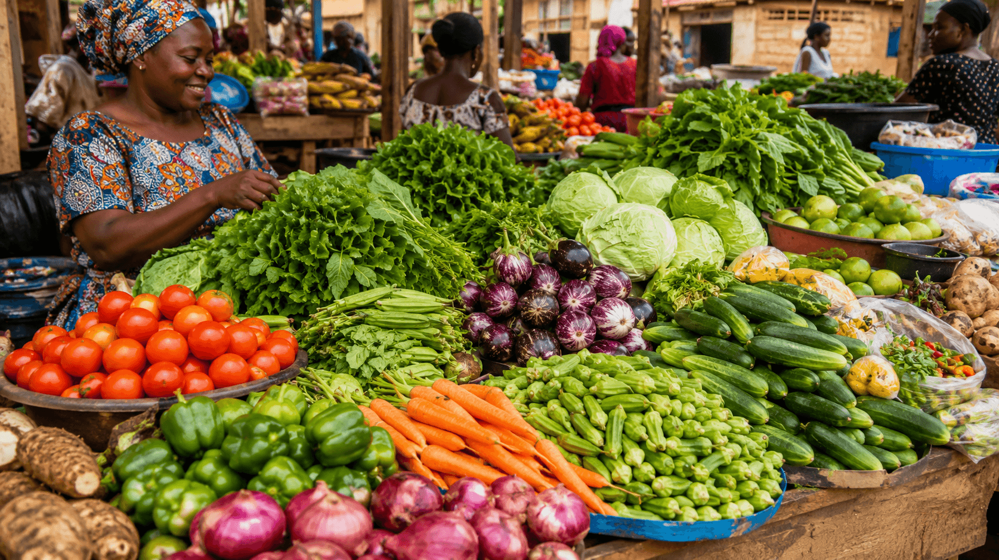
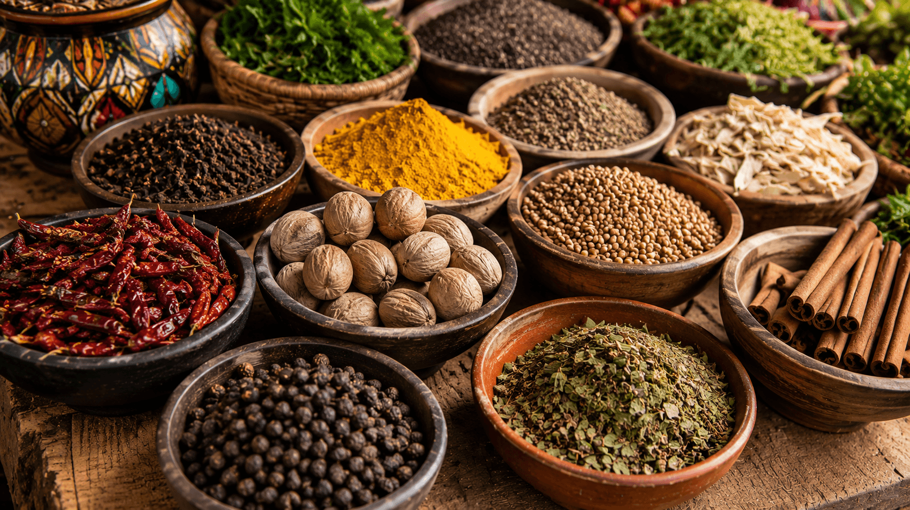
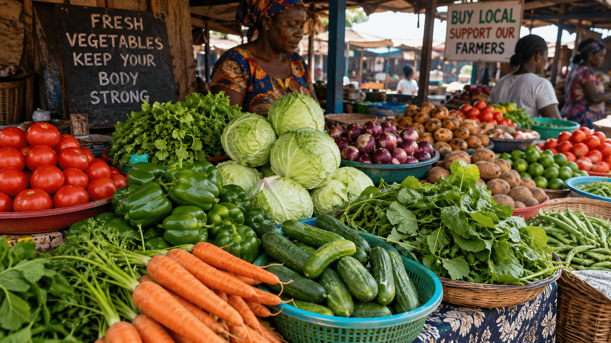

The 14 Day Diet Meal Plan
A Free Resource for Lowering Blood Pressure With Local African Foods
You're here because you've been struggling with high blood pressure. Maybe your doctor told you to eat less salt. Maybe you've tried to change your diet before, but the advice you found online didn't make sense for your kitchen.
This page gives you a preview of what's possible.

Fresh produce from your local market — all you need to lower your blood pressure
What Most Diet Plans Get Wrong
If you search online for blood pressure meal plans, you'll find recipes that call for quinoa, kale, almond milk, and Greek yogurt. These foods are expensive, hard to find, and have nothing to do with how you actually cook.
A single Maggi cube contains approximately 1,000 milligrams of sodium. Most households use two to four cubes per pot of stew. That means before you've eaten any actual food, you've already consumed your entire daily sodium limit.
And if you've been eating plantain as a vegetable or snacking on groundnuts daily thinking they're healthy, you're not alone. These are common mistakes that no one tells you about.
What We've Learned From Thousands of Readers
Over the past several months, we've worked with people across Nigeria, Ghana, Kenya, and South Africa who wanted to lower their blood pressure without abandoning their culture or their budget.

Traditional African meals — naturally heart-healthy and sodium-conscious
- The African DASH method works. People see measurable results in as little as fourteen days.
- No imported superfoods needed. Ugu, ewedu, millet, keta — all in your local market.
- You don't have to quit Maggi completely. Gradual reduction preserves flavor.
- Small fish provide better calcium than milk. More affordable and more bioavailable.
What Readers Are Saying
“I didn't know that two Maggi cubes put me over my daily limit. Just knowing that changed everything. I followed the fourteen day protocol and my blood pressure dropped from 145/90 to 130/85.”
— Reader from Lagos, Nigeria
“The plantain correction alone was worth it. I had no idea I was eating plantain like a vegetable. Now I eat plantain as a carb and add ugu for my vegetable.”
— Reader from Accra, Ghana

Flavor your food with spices, not salt — the secret to lowering sodium without losing taste
“I was skeptical about the small fish calcium swap. Now I eat keta three times a week and my last blood pressure reading was 120/80.”
— Reader from Nairobi, Kenya
The Key Principles You Need to Know
- The Maggi Cube Rule: One cube = 1,000 mg sodium. Reduce from four cubes to one cube over fourteen gradual days.
- The African DASH Food Map: Vegetables: Ugu, ewedu, bitter leaf. Grains: Millet, sorghum, brown rice. Calcium: Keta, sardines, greens.
- The Plantain Correction: Plantain is a carbohydrate, not a vegetable. Count it accordingly.
- The Groundnut Limit: The DASH diet limits nuts to four servings per week.
- The Small Fish Swap: Small fish with bones provide calcium that is more absorbable than milk.
- Sodium Reduction Is Gradual: Slow reduction means better compliance and less resistance from family.
Frequently Asked Questions
Do I need to buy any expensive or imported ingredients?
▼
No. Every single food recommended is available in local markets across Nigeria, Ghana, Kenya, and South Africa. No quinoa, kale, almond milk, or Greek yogurt.
Do I have to quit Maggi completely?
▼
No. The goal is reduction. Most people target one cube or less per day while maintaining flavor through spices.
What if my family complains about the food?
▼
Reduce cubes gradually so they barely notice. Keep a salt shaker on the table for those who cannot adjust immediately.
How long until I see results?
▼
Most people see a measurable drop in blood pressure within fourteen days. Some see changes within one week.
Is this for people with diabetes too?
▼
The DASH diet is also recommended for diabetes control. The meals are low in added sugar and rich in fiber. Consult your doctor first.
Do I need to stop my medication?
▼
No. This is educational information, not medical advice. Never stop or reduce medication without speaking to your doctor.
What Makes This Approach Different
The guide you're about to access was built from the ground up for African kitchens. Not adapted from Western recipes. Not translated from foreign ingredients. Built from the foods your grandmother cooked.
Your grandmother did not have high blood pressure. She cooked with fresh vegetables from her garden. She ate small fish with the bones included. She used groundnuts and egusi as occasional treats, not daily snacks.
This approach asks you to return to that way of eating. Not to abandon your culture. Not to import expensive foods. To cook the way your body was designed to eat.
Important Disclaimer: This content is for informational and educational purposes only and does not constitute medical advice. Always consult with your physician before making any changes to your diet, lifestyle, or medication regimen. Individual results vary based on adherence and personal health factors.